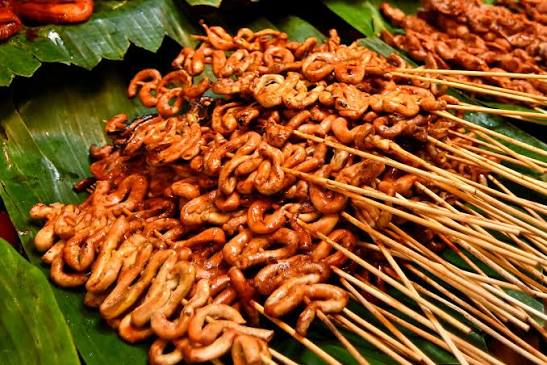
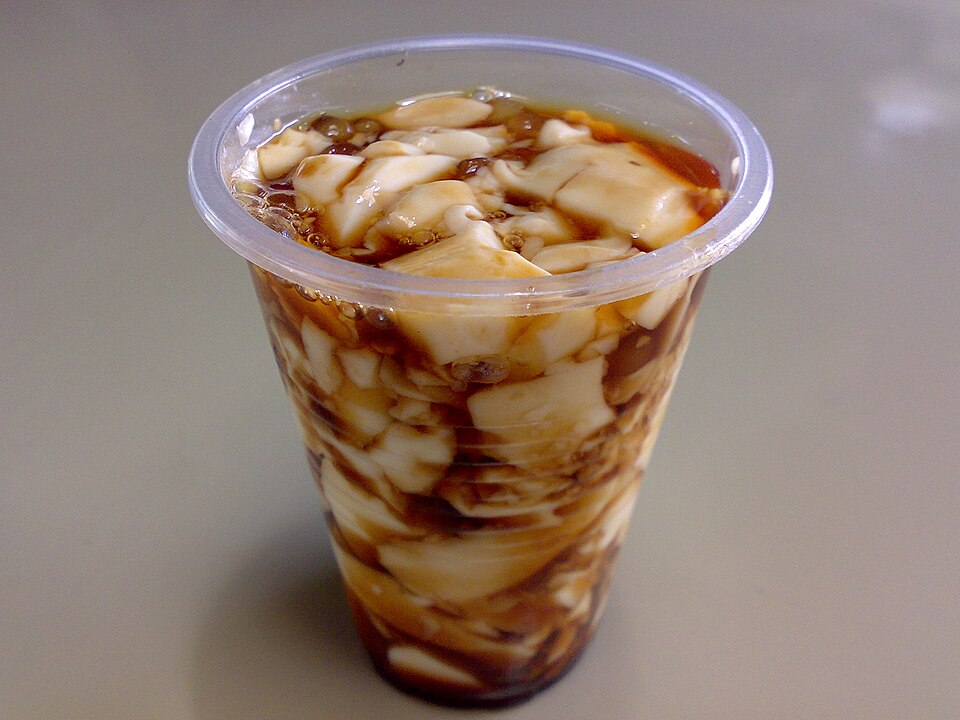
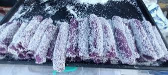

Street Food & Merienda
Merienda (afternoon snack) and street food are beloved parts of Tarlac’s daily life – from bustling market stalls to roadside vendors near schools and plazas. These affordable, flavorful bites capture the playful, vibrant spirit of the province, with many snacks passed down through generations of vendors.
Featured Street Food & Merienda Snacks
-

Grilled Isaw -

Taho -

Puto Bumbong
About These Popular Snacks
- Grilled Isaw: Chicken or pork intestines marinated in garlic, vinegar, and soy sauce before grilling – a staple street food in Tarlac’s public markets and near bus terminals. Served with a side of spicy vinegar and chopped onions, it’s a favorite among locals and visitors looking for an authentic bite.
- Taho: Silken tofu mixed with warm caramel syrup and sago pearls – sold by vendors who carry their wares on wooden carts through residential neighborhoods and plazas. Tarlac’s taho often uses locally made syrup from sugarcane grown in the province’s southern towns.
- Puto Bumbong: Purple rice cakes steamed in bamboo tubes, traditionally sold during Christmas season but now available year-round in Tarlac City. Topped with grated coconut, muscovado sugar, and butter – many vendors source their purple rice from upland Tarlac farms.
- Kwek-Kwek: Quail eggs coated in orange batter and deep-fried – served with a sweet and sour sauce. A popular snack for students near schools in Concepcion and Capas, often paired with fresh lumpia or fish balls.
- Turon: Fried banana rolls with jackfruit and brown sugar, wrapped in spring roll wrappers. Tarlac’s version uses ripe saba bananas from local plantations and is often served with a drizzle of caramel syrup.
Where to Find These Snacks
- Tarlac City Public Market: The best place to sample a wide variety of street food – head to the “street food alley” near the main entrance for isaw, kwek-kwek, and fresh fruit drinks.
- Plaza Lugue (Tarlac City): Vendors set up stalls in the evening selling taho, turon, and grilled corn – perfect for a post-dinner snack while enjoying the plaza’s ambiance.
- Capas Town Center: Near the Pinatubo jump-off points, vendors sell merienda snacks like puto bumbong (year-round) and hot chocolate made from local cacao beans.
- School Areas (All Towns): Look for vendors near high schools and universities – they serve affordable snacks that students love, like fish balls, kikiam, and fresh lumpia.
The Culture of Street Food & Merienda in Tarlac
- Social Gathering: Street food stalls are places where friends meet, families bond, and strangers strike up conversations – they’re hubs of community life in Tarlac.
- Affordable Indulgence: Most snacks cost just a few pesos, making them accessible to everyone – from students to workers to families out for a walk.
- Generational Trade: Many vendors have been selling the same snacks for decades, passing down recipes and techniques to their children and grandchildren.
- Seasonal Specials: Some snacks are tied to festivals or harvest seasons – like puto bumbong at Christmas, or grilled corn during the summer harvest.